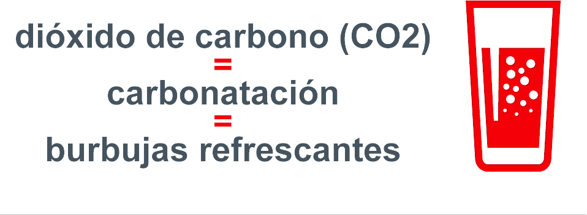

La carbonatación le pone el “fizz” a las bebidas burbujeantes. Sucede cuando el dióxido de carbono – el gas natural que exhalamos en la respiración y que las plantas ocupan - se introduce a presión en un líquido, dándole a las bebidas carbonatadas su sabor “astringente” característico y su cualidad refrescante.
Durante siglos las bebidas carbonatadas se han asociado a beneficios para ayudar a combatir la indigestión y los dolores de estómago. Se requieren más estudios en esta área.
Para aquellos preocupados por el mantenimiento del peso corporal, el dióxido de carbono que da a los refrescos su cualidad burbujeante, no aporta calorías, pues está formado únicamente por oxígeno y carbono.